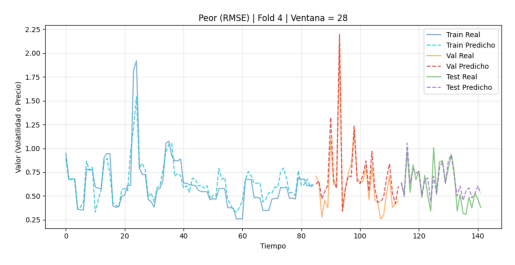

Análisis de Resultados#
Show code cell content
import matplotlib.pyplot as plt
import matplotlib.image as mpimg
Show code cell content
lags = [7,14,21,28]
def peor_fold(lags, t):
for lag in lags:
ruta = f'data/{t}/figs/lag_{lag}/peor_rmse_lag_{lag}.png'
img = mpimg.imread(ruta)
plt.imshow(img)
plt.axis('off') # Oculta los ejes
plt.show()
def mejor_fold(lags, t):
for lag in lags:
ruta = f'data/{t}/figs/lag_{lag}/mejor_rmse_lag_{lag}.png'
img = mpimg.imread(ruta)
plt.imshow(img)
plt.axis('off') # Oculta los ejes
plt.show()
def mediano_fold(lags, t):
for lag in lags:
ruta = f'data/{t}/figs/lag_{lag}/mediano_rmse_lag_{lag}.png'
img = mpimg.imread(ruta)
plt.imshow(img)
plt.axis('off') # Oculta los ejes
plt.show()
def rmse_por_fold(lags, t):
for lag in lags:
ruta = f'data/{t}/figs/lag_{lag}/rmse_por_fold_lag_{lag}.png'
img = mpimg.imread(ruta)
plt.imshow(img)
plt.axis('off') # Oculta los ejes
plt.show()
def rmse_promedio_por_horizonte(lags, t):
for lag in lags:
ruta = f'data/{t}/figs/lag_{lag}/rmse_promedio_por_horizonte_lag_{lag}.png'
img = mpimg.imread(ruta)
plt.imshow(img)
plt.axis('off') # Oculta los ejes
plt.show()
Precio de Cierre#
Time Series: Train/Val/Test#
Peor Fold#
peor_fold(lags, 'precio_cierre')
Fold Medio#
mediano_fold(lags, 'precio_cierre')
Mejor Fold#
mejor_fold(lags, 'precio_cierre')
Gráfico de Barras: RMSE por fold#
rmse_por_fold(lags, 'precio_cierre')
RSME Promedio por Horizonte#
rmse_promedio_por_horizonte(lags, 'precio_cierre')


Volatilidad#
Time Series: Train/Val/Test#
Peor Fold#
peor_fold(lags, 'volatilidad')

Fold Medio#
mediano_fold(lags, 'volatilidad')
Mejor Fold#
mejor_fold(lags, 'volatilidad')
Gráfico de Barras: RMSE por fold#
rmse_por_fold(lags, 'volatilidad')

RSME Promedio por Horizonte#
rmse_promedio_por_horizonte(lags, 'volatilidad')